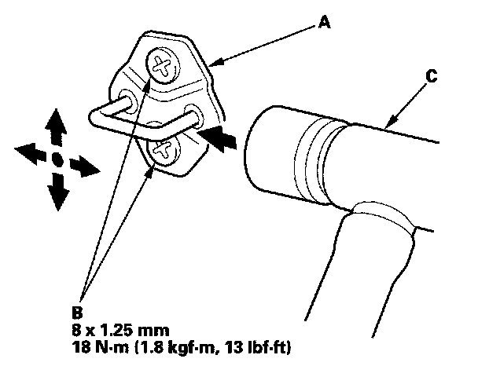

Rear Door Striker: Adjustments
Front and Rear Door Striker AdjustmentMake sure the door latches securely without slamming it. If necessary, adjust the striker (A): The striker nuts are fixed, but the striker can be adjusted slightly up or down, and in or out.

1. Loosen the screws (B).
2. Wrap the striker with a shop towel, then adjust the striker by tapping it with a plastic hammer (C). Do not tap the striker too hard.
3. Lightly tighten the screws.
4. Hold the outer handle out, and push the door against the body to be sure the striker allows a flush fit. If the door latches properly, tighten the screws and recheck.